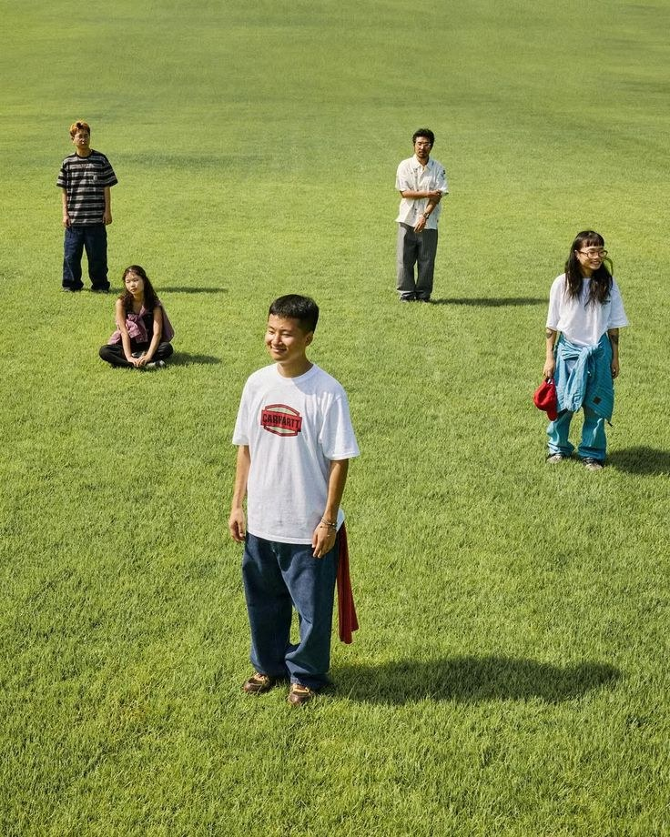

Partnering with missionary families
“Kyiv Christian Academy exists to help fulfill the Great Commission by partnering with missionary families to offer a quality education in the English language within the framework of a Biblical worldview.”

Home/About Us
Kyiv Christian Academy is an international private school serving Pre-K through Grade 12, including missionary families, international professionals and Ukrainian nationals, with a quality English-language education within the framework of a Biblical worldview.

KCA was established to help missionary families serving in Ukraine give their children an excellent, English-language education without leaving the field. Today our community also includes international professionals and Ukrainian families who share our values.
Our American curriculum is taught entirely in English and leads to an accredited U.S. diploma. Small classes mean every student receives individual instruction, close academic monitoring and personal support.
“Kyiv Christian Academy exists to help fulfill the Great Commission by partnering with missionary families to offer a quality education in the English language within the framework of a Biblical worldview.”
We pray that each student will develop a personal relationship with Jesus Christ, understand, appreciate and develop their God-given potential, and be prepared for their calling in life for the glory of God.
We support parents, who carry the primary responsibility for their children’s education.
We pursue excellence in every area of life: in class, in character and in service.
Challenging, standards-based learning that prepares students for university.
We proclaim the good news of Jesus Christ and teach every subject from a Biblical worldview.
An international community that honors the many cultures our families come from.
Teachers and staff who model servant leadership and Christ-like character.
An orderly and secure atmosphere that is conducive to learning.
Students, teachers, staff and parents growing together in faith and learning.
KCA’s doctrinal statement is summarized below. Families are asked to agree with our Christian philosophy of education.
We believe the Bible is the inspired Word of God and the final authority for faith and life.
We believe in one God, eternally existing in three persons: Father, Son and Holy Spirit.
We believe in the redemptive work of Jesus Christ through His death and resurrection, and in His personal return.
We believe that all people are sinful and that salvation comes through faith in Christ alone, by which we are justified before God.
We believe in the ministry of the Holy Spirit, who empowers believers to live a godly life.
We believe in the bodily resurrection of the dead and in the spiritual unity of believers as the Church, the body of Christ.
Association of Christian Schools International, a global association supporting Christ-centered schools with standards for spiritual and academic excellence.
Middle States Association of Colleges and Schools (MSA), a U.S. accrediting body, so KCA graduates earn a recognized American diploma.

Our facility sits on large, enclosed grounds with everything students need for a full school day.
Book a campus tour and meet our teachers.